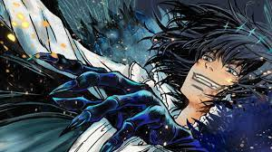

【考察】オベロンって実は

メリュジーヌに似ているのでは？
星見のティターニアに似たモノ＝キャストリアを見てずっと脳内でこねくり回してたんだけど
・異聞帯ではぐだ以外に本命っぽい相手がいる（キャストリア、オーロラ）
・召喚されてすぐ未来視による恋人認定とかティターニア認定（きみ＝ティターニア）
・つまりオベぐだはオイオイねーな関係なのでは？
考察スレなので管理はします。
スレ画は出来のいいオベロン>>33
異聞帯でのティターニアに似たものがキャストリアならぐだへの「きみ」呼びはなんなんだ…の答えがこれじゃないかと思った
まさかの竜特性には触れないんだな
>>7
オベロンのティターニア概念
唯一の理解者であり、自分を救うかもしれない恋人、および輝ける星
理解者＝ぐだ男
>>26
恋人（将来）＝ぐだ子
そのどちらにもなれなかったキャストリア（みたいなもの）
オベロンも竜特性だよね？
ティターニアに似た者＝ティターニアではないのだから本命っぽいって言い方はちょっと適切じゃないんでは？
>>10
そもそもオベロンはティターニアが好きなんだからぐだもキャストリアも似てるだけで別にティターニアじゃなくね？
>>12
そこはニュアンスで受け取ってくれ
さらに突き詰めればティターニアに似たものであってなれなかったのがキャストリア
むしろティターニア＝ぐだをより強固にしてるとは思う
個人的なお気持ちだけどオベロンが新聞でバッグにキャストリアとぐだ子のマスコット付けてるのがまじのまじで好き
オベ公が異聞帯のヴォーティガーンでありヴォーティガーンの竜特性の出所がアルビオンの竜であろうことを思えばあながち外してもないと思う>オベ＝メリュ説
星見から界隈が荒れたり、オベロンはぐだガチ勢じゃないって意見も見て悲しくなって…この答えに辿り着いてまじ泣いた
>>14
お前がティターニアだ
誰が1番ティターニアか論争してるの馬鹿らしくないんだろうか
>>20
ティターニアに似てるからオベロンはそいつが好きとか嫌じゃないのか
どちらも話に伝わるメリュジーヌからもオーベロンからもかけ離れていてよく分からん
オベロンが語るティターニアには様々な側面があるしオベロンが「きみ」を使うの対主人公でもごく限られた場面なのであれは2部6章をクリアしてなおオベロンに会いに行くプレイヤーに対する呼び方だと解釈してる
ティターニアは存在しなくてオベロンにとっては絶対に会えない概念的な存在だけどだからこそ探し求めるって矛盾を抱えている
妖精國でオベロンはアルキャスにティターニアを重ねていた(ぐだにもズバリ指摘されてる)けど彼女をティターニアと認めることはできなかった
これはティターニアじゃないからとも取れるし、認めてしまうと生み出され消費される存在に定義してしまうことを恐れたとも取れる
主人公はオベロンの敵役でありだからこそ本音を見抜けた理解者ではあるが今のところ「きみ」呼びの理由は不明
妖精國ではっきりと異性愛者と設定されているのはノクナレアだけらしいので、もしかするとノクナレアと同位体の先代マブは異性愛者かもしれないが、そうではないオベロンにとってぐだ子が恋人候補ならぐだおも恋人候補だし、ぐだおが理解者ならぐだ子も理解者だと思うよ
ティターニアは女の子（だとオベロンが認識してる）
ぐだ男にも「きみ」呼びなんだから恋人とか異性的な意味ではなくね？
顔合わせで恋人扱いしてくるヤベー竜と顔合わせでなんで敵対したのに呼ぶんだよ気持ち悪いな！？って言ってくる虫を同一視するのは流石に虫さんに失礼
あれを「大分女性として意識してた」は髪切ったことを指摘して褒めてくれた女性に俺のこと好きなんだ…と勘違いするモテない男と同じレベルなんよ
面白い考察だなとは思うけど
🍄作品とFGOに触れると深く考えるだけ無駄なんだとわかった、本編では別キャラとの絡みが多いけどマイルームだとぐだにモーションかけるなんて普通だし
キャストリアとか村正にもべたべたしてるけどマイルームのAAはぐだデレしてるし…作り手からしたらぐだ＝プレイヤーだからなんだよ
男女差分があるっていうのは男女で対応を変えるって意味でしかないと思うし女性を女性として扱うからといって必ずしも恋愛的な意図が絡むとは限らないと思う
2部6章においてはオベロンがキャストリアにティターニアを見ていて彼女のことを広義の意味で愛していたし尽くしていたことは間違いないと思う
じゃなきゃオベロンの本音を暴く役割だったぐだにしつこくオベロンのティターニアってアルトリアでしょ？とかアルトリアのこと好きなんだねとか言わせる意味がない
ただ最後までついに彼はキャストリアを自分のティターニアと定義することはしなかったしそれこそが彼の愛の形だったんではなかろうか
そして一度認めなかったティターニアを今後彼は誰に対しても認定することはないんだろうとも思うわけ
というかオベロンもオベロン・ヴォーティガーンも愛するのはティターニアだけだし「ティターニアをきみと呼ぶ」と「きみ呼びしたからティターニア」は逆なので必ずしも真ではない
なんなら主人公でも基本的に「きみ」とは呼ばず「君」なので対偶が成り立つことによりティターニアは主人公ではないとも言えてしまう
主人公がティターニアか、については今のところ可能性を汲み取っても「部分的にそうかもしれない」としか言えなくない？常日頃メリュジーヌのようにティターニア扱いしてるならまだしもオベロンはそうじゃないんだし
カプとか抜きの考察ならめちゃめちゃ雑に
>>44
①自分に理解者(ティターニア)は存在しないと考えていたが無自覚にキャストリアに肩入れしていたことに死の間際に気づく
②死後鯖として召喚された時には①の経験があるので態度が柔らかくなっている、しつこく関わり続けた主人公含めた一部の相手に自覚的に肩入れしている
だと思う、オベロン-キャストリアってあからさまにマーリン-アルトリアの再話だしなんか「本命」とかそういうんじゃなくってぇ……いや恋愛要素皆無とは言わないけどなんかもっとこうしっとりしてて不器用な感じでぇ……
メリュ子とオベロンは似てるのは考える余地はあるけどつまりカルデアに来てるオベロンはメリュ子と同じぐらい好感度爆増してるということになるのでは？
ティターニア論争見てて思うけど他の人に重ねられるのぶっちゃけ嬉しくなくない？
そもそもオベ公→キャストリアってメリュ子→オーロラよりむしろメリュ子→パーシヴァルのが近くないか？
>>68
ラインは僕が決めるんじゃない＝行って見てもいいけどどうなっても責任持たんよみたいなイメージだったわ
きのこって失恋（広義）したキャラをぐだで救うみたいなとこあるからオベロンもその枠なのかも
オベロンって女性に対してちゃんと女性扱いするタイプだと思う。正直ぐだ男とぐだ子では性別が変わっても向ける感情の質は同じっぽいから、理解者という側面が強いのかなと思ってる。
言うて妖精国時点で藤丸(というかカルデア一行？)に好意的なキャラな気はするんだけどな
計画に必要ないのにわざわざアルキャスを庇うやつであることと計画が完遂した後にわざわざ藤丸と話をしに来るやつであることの両方描かれてるからこそあんだけ人気なんだと思う
水着イベとかカズライベとかLB6クリア後が確定してるようなイベントでも徹底して一切きみ呼びをせずに召喚セリフとバレンタインと竹箒日記だけなあたりプレイヤーと重なる場面じゃなきゃぐだは「きみ」じゃないんだろうと思ってる
バレンタインのきみ呼びは「君/きみ」→「時/刻」の変化と章タイトルとLB6本編での奈落から飛び立つストームボーダーのイベントCG込みで読み取る物だと思ってたんだけど、急にプレイヤーに接続してくる層は一体何？
>>56
竹箒に引っ張られ過ぎ？
「君がどうしようもない終わりを迎えて、まっさかさまに墜ちる刻が来るのなら」
>>61
実際にそんな時は来なかったしぐだは終わりのない奈落に永遠に落ちていくオベロンを肯定して終わったのがLB6なんだよね
ここからこの終わりに逆らってカルデアにオベロンを呼ぼうとガチャを回したのはプレイヤーだし「そういう人間だもんな、きみは」って召喚セリフもそういうプレイヤーの欲を踏まえたものと捉えた方がすんなり解釈できると思う
アルビオンとヴォーディガーンで
ブリテンの赤き竜と白き竜じゃなかったっけ
メリュ子の霊衣の説明に「赤き竜と白き竜は同一」って書いてあったから似てる以前に同位体だと思ってた
どうしようもない〜堕ちる刻←普通に昏睡状態にしたぐだ及びカルデア一行を奈落に落とした時を指してると思ってたんだけど違うの？
落ちてんのに贈り物なんてできるわけないから当然継続じゃなくて一過性、なら本編のあの場面か〜って読んでる
召喚台詞に関しては最愛のティターニアに向ける二人称を第四の壁を越えて最も嫌う消費文明の人間に使う解釈は個人的に全然納得できない
じゃあ何？って疑問点が残るのはわかる
絶対に根拠となるエピソードがもっと必要なのにガチャ機能に丸投げしてる構造だから絶望的にソシャゲが向いてないキャラだったなと思ってる
家庭用ゲーム機で生まれるべきだった
きのこは「主人公=画面の前のお前ら」スタンスのライター(故に嫁ネロ等でちょくちょくミスって炎上する)だからぐだとプレイヤーを区別する台詞とかは書かんだろ
ただメタネタを好むライターでもあるからたまに第四の壁超えてすんげぇ皮肉が飛んでくる
赤文字選択肢はプレイヤーと主人公に思考の差があるのはまずいってことで追加されたものだしそれぞれのプレイヤーのスタンスはさておきFGOは主人公=あなたのゲーム
仮に主人公≠プレイヤーだとしても主人公もプレイヤーも物語の読み手であることは変わらないから第四の壁を理解してようと区別してプレイヤーだけを嫌う理由がない。でないとナーサリーをあんな文言でお茶会に誘わないよ
主人公=プレイヤーを前提として
6章クリア後軸の夏イベやら双六イベやらにオベロンが出てきてるんだから召喚のやり取りもあったわけで
でもこの主人公は「きみ」ではなくて、自機で喚ばないと「きみ」にはならないという理屈がごめん本当にわからない
自分には都合に合わせて繋げたり切り離したりしてるように見えてるんだけど
自己投影夢思考を持ち合わせていないからか？
オベロンを引いてないと「きみ」はないしオベロンを引いていても「きみ」呼びは限られている
>>67
自機オベロンがいても妖精國クリアしないと「きみ」呼びはない
なら前提条件として妖精國をクリアした上でさらにオベロンを召喚する、チョコを渡すっていう明確な行為を現在進行系でする必要があるんじゃないかな
オートモードだと選べない選択肢を手動なら選べるような感じで
>オートモードだと選べない選択肢を手動なら選べる
多分ここが考えの異なる所なんだろうなと分かった
こっちは章完結後にプレイアブル実装された時点で
妖精國後に召喚→バレンタイン等各種イベント
が正規ルートで自機召喚はそれを読む為のアンロックでしかなくて、召喚時期によって矛盾が生まれるところは差分作ってる認識なんだよね
あとバレンタインは6章クリア後に贈り物受け取ってるんだから「まっさかさまに堕ちる刻」=「妖精國崩壊時に奈落の虫に呑まれる(そして脱出する)」で自明だったわ
長々と失礼
コメント
コメント機能は再構築中です。再開後、この欄に表示します。